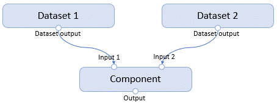
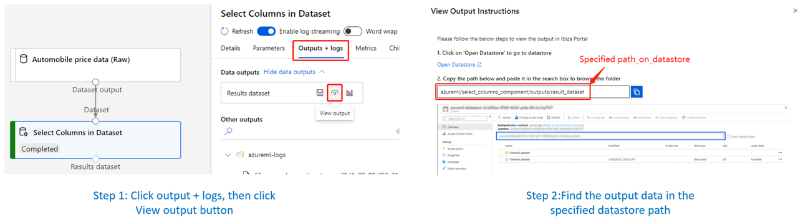

Inputs and Outputs¶
The component interface is defined by its inputs and outputs.
The input could either be an Input Port or a Parameter. The output could only be an Output Port.
Input ports and output ports typically refer to a path. In Designer, they will be displayed as a port on the component. They could have arbitrary type names such as CsvFile, ImageFolder to describe the underlying data. A component‘s output port could be connected to another component‘s input port, given they have the same type name.

Parameters are input values passed to the component by the command line while executing. In Designer, they are displayed on the right panel of the component. A parameter could only have scalar values such as Integer, String, Boolean, Enum. Each parameter could have additional attributes such as default, min, max, etc.
Configure runtime behavior of Inputs and Outputs¶
The configurations of Input and Output ports are used to adjust their behaviors while running.
Input Configuration [Not ready for use]¶
Configure input port (input parameters are not supported) settings of a component, including Command Component, Parallel Component and HDIInsight Component.
Supported settings:
| Name | Type | Default value | Description |
|---|---|---|---|
| mode | "mount" and "download" | "mount" | The mode that will be used for this input. |
Example SDK usage: Suppose we have a component with an input named “input_path“, its configuration will be:
component.inputs.input_path.configure(mode="mount")
Output Configuration¶
Configure output port settings of a component, including Command Component, Parallel Component and HDIInsight Component.
Supported settings:
| Name | Type | Default value | Description |
|---|---|---|---|
| datastore | azureml.core.datastore.Datastore | Default datastore in the Workspace | The datastore that will be used for the output. |
| output_mode | "upload" or "mount" | "mount" | Specify use "upload" or "mount" to access the data. |
| path_on_compute | str | A temporary folder on Compute. | The path of output data on the compute. |
| path_on_datastore | str | Relative path on datastore: azureml/{run-id}/outputs/{output-name} | The relative output path on datastore. |
Note:
path_on_compute: path_on_compute differs according to the OS, E.g., “/tmp/path“ on Linux compute, “C:/tmp/path“ on Windows compute.
If it is not specified, a temp folder will be used. If the specified path doesn‘t exist, a new folder will be created for writing data.
Absolute path and relative path are both supported.
path_on_datastore: Pattern path is supported, which means you can use {run-id} and {output-name} expressions in the pattern path, E.g. “azureml/component/{run-id}/outputs/{output-name}“, to specify the run-id and output‘s name in the output‘s path on datastore. Running Component on Windows compute and HDInsight Component are not verified yet.
Find the output data on datastore:

Example usage: Suppose we have a component with an output port named “result_dataset“, code below illustrates a sample configuration.
my_datastore is a datastore on the workspace, which can be got by Datastore.get.
from azureml.core import Datastore
my_datastore = Datastore.get(workspace=workspace, datastore_name="datastore_name")
component.outputs.result_dataset.configure(datastore=my_datastore,
output_mode="mount",
path_on_compute="/component/run/compute/", # Suppose it's on a Linux compute
path_on_datastore="azureml/component/outputs/result_dataset",
# Or use pattern path
# path_on_datastore="azureml/component/{run-id}/outputs/{output-name}")